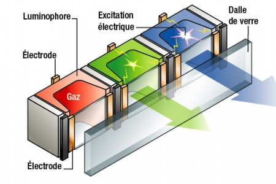
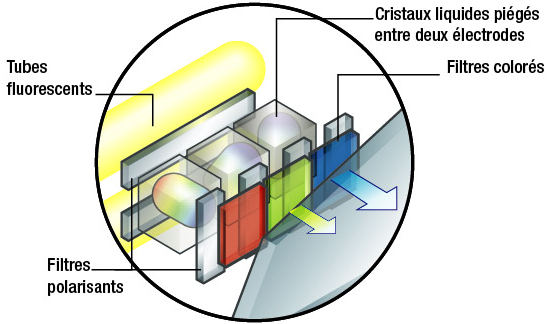
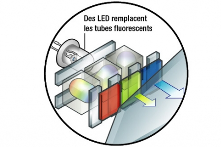
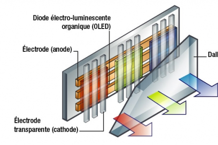
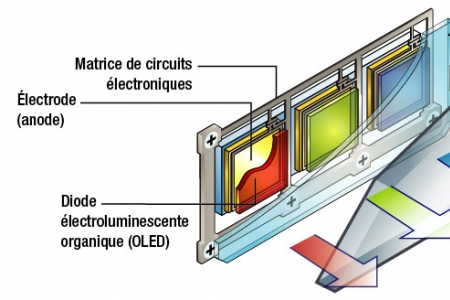

Technologies d'écrans
Les écrans plats des appareils mobiles, des tablettes, des téléviseurs LCD, Plasma, l'écran OLED des téléphones sont autant de technologies différentes mais qui mettent en œuvre un même principe.
Une image numérique est composée de pixels ayant chacun une couleur. Chaque pixel est composé de 3 sous-pixels rouge, vert et bleu dont notre cerveau assure la synthèse quand on s'éloigne de l'écran. La variation de luminosité de chaque sous-pixel RGB (Rouge Green Blue) détermine la couleur de chaque pixel.
Les technologies des écrans se différencient en fait par la manière dont sont créés chaque sous-pixel.
Ecran PLASMA |
|
 |
 |
A une échelle minuscule, l'écran plasma reprend le principe du tube néon. Chaque sous-pixel est l'équivalent d'une lampe phosphorescente : il enferme un gaz (mélange d'argon et de xénon) qui, lorsqu'il est placé sous tension, se met dans un état d'excitation appelé plasma. Il émet alors des rayons ultraviolets (UV), invisibles à l'œil. Chaque sous-pixel contient aussi un luminophore. Lequel est constitué d'une substance chimique qui réagit aux UV en émettant de la lumière. La composition chimique du luminophore détermine la couleur de la lumière qu'il émet. Quant à la variation de la luminosité de chaque sous-pixel, on joue sur la fréquence d'excitation électrique. Pour une même durée, plus un sous-pixel est excité souvent, plus le plasma émet des UV, plus la réponse du luminophore paraît intense. En raison de la taille des pixels (deux fois celle des pixels d'un écran LCD), la technologie plasma s'installe plutôt dans les écrans de plus d'un mètre de diagonale |
LCD signifie Liquid Crystal Display, c'est-à-dire, en français, écran à cristaux liquides. Un tel écran se compose de plusieurs couches. A l'arrière, des tubes fluorescents éclairent les cristaux liquides, lesquels sont coincés entre deux filtres qui ne laissent passer la lumière que sous un certain angle : ils sont dits polarisants. Les cristaux liquides, quant à eux, jouent le rôle de stores : la quantité de lumière qu'ils laissent passer, varie en fonction de la tension électrique qui leur est appliquée. En bout de course, des filtres colorés teintent la lumière sortante de rouge, de vert ou de bleu selon le sous-pixel. |
Ecran LCD-LED |
Ecran OLED |
 |
 |
Pour réduire l'épaisseur des écrans, les fabricants ont remplacé les tubes fluorescents par des centaines de Led, d'où l'appellation LCD Led indiquée sur certains écrans. C'est uniquement le système d'éclairage qui diffère. La technologie d'affichage reste, elle, identique à la technologie LCD. Dernière déclinaison de la technologie LCD, les écrans Led Edge. Dans ce cas, les diodes, au lieu de tapisser la face arrière de l'écran, occupent ses côtés, dans l'épaisseur du cadre. Et c'est un fond réfléchissant qui répartit alors la lumière sur toute la sur face de l'écran. |
Pour créer les sous-pixels, les écrans Oled utilisent des cousines des diodes électroluminescentes (Led). Lesquelles sont conçues à partir de composants organiques (d'hydrogène, d'oxygène, d'azote et de carbone), d'où le O d'Oled. Leur avantage par rapport aux Led classiques : elles peuvent couvrir des surfaces. Pas de système de rétroéclairage, la diode de chaque sous-pixel émet sa propre lumière quand elle est activée électriquement. Sur un écran Oled, la diode est prise entre deux électrodes (anode et cathode) en forme de grilles linéaires disposées perpendiculairement. La mise en lumière d'un sous-pixel s'effectue par la mise sous tension de la ligne de l'anode et de la colonne de la cathode correspondante. |
Ecran AMOLED |
|
 |
|
Déclinaison de l'Oled, l'écran Amoled est équipé d'une grille de circuits électroniques, appelée matrice active (Active Matrix). Chaque sous-pixel possède des transistors qui permettent de l'activer directement. Un tel système permet de réduire la consommation électrique et d'augmenter la précision de l'affichage. Les écrans Oled et Amoled, beaucoup plus fins que les écrans LCD grâce à l'absence de rétroéclairage, sont actuellement dévolus aux écrans de petites tailles (baladeurs, appareils photo numériques et téléphones mobiles). Certains téléviseurs Oled existent, mais demeurent très onéreux. Pour l'instant. |
Source: http://www.01net.com